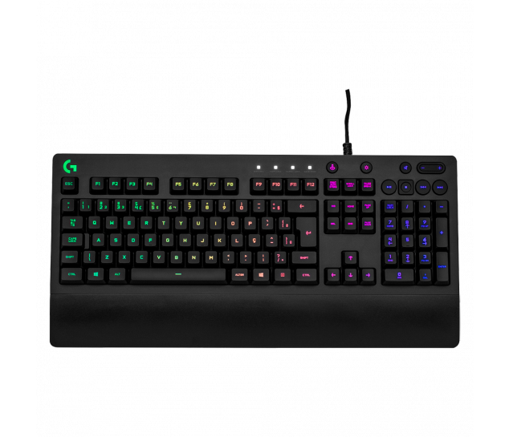

No entanto, o custo deste tipo de material também é maior, e geralmente só gamers de nível competitivo fazem uso desse equipamento. Um teclado gamer (do tipo mecânico) tende a vir com, no mínimo, seis Key Rollovers. Ou seja, não perdem a função de até seis teclas, quando pressionadas ao mesmo tempo
 voltar